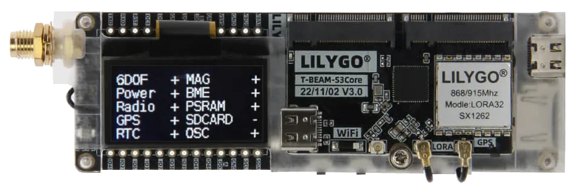
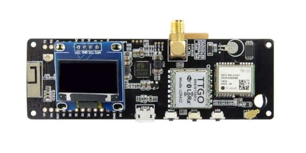
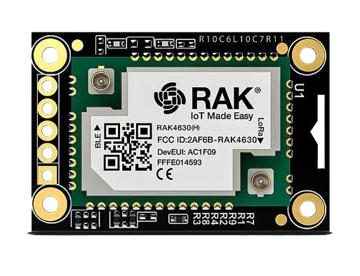
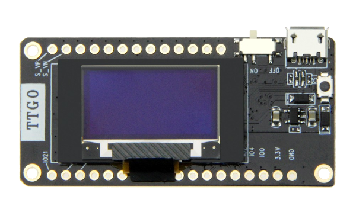
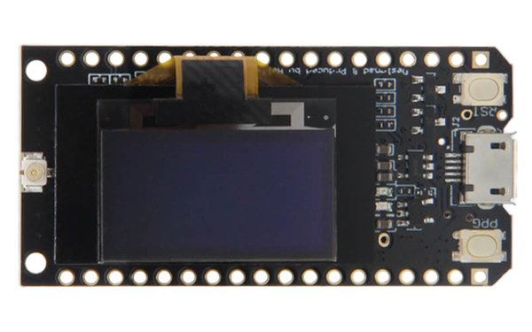
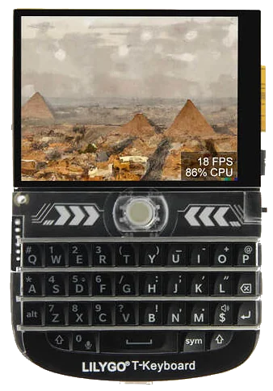
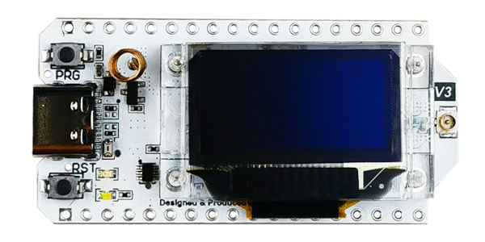
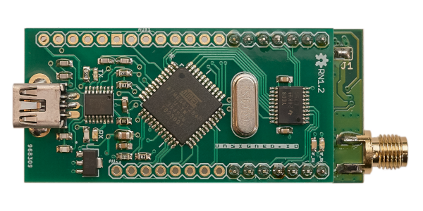
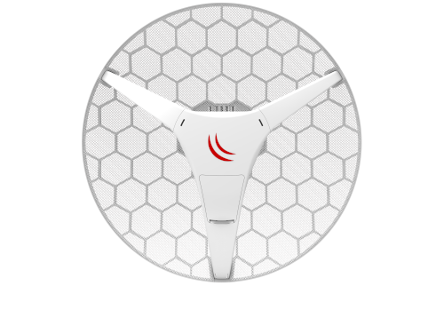
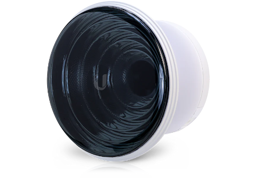

Communications Hardware#
One of the truly valuable aspects of Reticulum is the ability to use it over almost any conceivable kind of communications medium. The interface types available for configuration in Reticulum are flexible enough to cover the use of most wired and wireless communications hardware available, from decades-old packet radio modems to modern millimeter-wave backhaul systems.
If you already have or operate some kind of communications hardware, there is a very good chance that it will work with Reticulum out of the box. In case it does not, it is possible to provide the necessary glue with very little effort using for example the PipeInterface or the TCPClientInterface in combination with code like TCP KISS Server by simplyequipped.
While this broad support and flexibility is very useful, an abundance of options can sometimes make it difficult to know where to begin, especially when you are starting from scratch.
This chapter will outline a few different sensible starting paths to get real-world functional wireless communications up and running with minimal cost and effort. Two fundamental devices categories will be covered, RNodes and WiFi-based radios. Additionally, other common options will be briefly described.
Knowing how to employ just a few different types of hardware will make it possible to build a wide range of useful networks with little effort.
Combining Hardware Types#
It is useful to combine different link and hardware types when designing and building a network. One useful design pattern is to employ high-capacity point-to-point links based on WiFi or millimeter-wave radios (with high-gain directional antennas) for the network backbone, and using LoRa-based RNodes for covering large areas with connectivity for client devices.
RNode#
Reliable and general-purpose long-range digital radio transceiver systems are commonly either very expensive, difficult to set up and operate, hard to source, power-hungry, or all of the above at the same time. In an attempt to alleviate this situation, the transceiver system RNode was designed. It is important to note that RNode is not one specific device, from one particular vendor, but an open plaform that anyone can use to build interoperable digital transceivers suited to their needs and particular situations.
An RNode is a general purpose, interoperable, low-power and long-range, reliable, open and flexible radio communications device. Depending on its components, it can operate on many different frequency bands, and use many different modulation schemes, but most commonly, and for the purposes of this chapter, we will limit the discussion to RNodes using LoRa modulation in common ISM bands.
Avoid Confusion! RNodes can use LoRa as a physical-layer modulation, but it does not use, and has nothing to do with the LoRaWAN protocol and standard, commonly used for centrally controlled IoT devices. RNodes use raw LoRa modulation, without any additional protocol overhead. All high-level protocol functionality is handled directly by Reticulum.
Creating RNodes#
RNode has been designed as a system that is easy to replicate across time and space. You can put together a functioning transceiver using commonly available components, and a few open source software tools. While you can design and build RNodes completely from scratch, to your exact desired specifications, this chapter will explain the easiest possible approach to creating RNodes: Using common LoRa development boards. This approach can be boiled down to two simple steps:
Obtain one or more supported development boards
Install the RNode firmware with the automated installer
Once the firmware has been installed and provisioned by the install script, it is ready to use with any software that supports RNodes, including Reticulum. The device can be used with Reticulum by adding an RNodeInterface to the configuration.
Supported Boards#
To create one or more RNodes, you will need to obtain supported development boards. The following boards are supported by the auto-installer.

{kind=link}
LilyGO T-Beam Supreme#
Transceiver IC Semtech SX1262, SX1268
Device Platform ESP32
Manufacturer LilyGO

{kind=link}
LilyGO T-Beam#
Transceiver IC Semtech SX1262, SX1268, SX1276 and SX1278
Device Platform ESP32
Manufacturer LilyGO

LilyGO T3S3#
Transceiver IC Semtech SX1262, SX1268, SX1276 and SX1278
Device Platform ESP32
Manufacturer LilyGO

{kind=link}
RAK4631-based Boards#
Transceiver IC Semtech SX1262, SX1268
Device Platform nRF52
Manufacturer RAK Wireless

Unsigned RNode v2.x#
Transceiver IC Semtech SX1276 and SX1278
Device Platform ESP32
Manufacturer unsigned.io

LilyGO LoRa32 v2.1#
Transceiver IC Semtech SX1276 and SX1278
Device Platform ESP32
Manufacturer LilyGO

{kind=link}
LilyGO LoRa32 v2.0#
Transceiver IC Semtech SX1276 and SX1278
Device Platform ESP32
Manufacturer LilyGO

{kind=link}
LilyGO LoRa32 v1.0#
Transceiver IC Semtech SX1276 and SX1278
Device Platform ESP32
Manufacturer LilyGO

{kind=link}
LilyGO T-Deck#
Transceiver IC Semtech SX1262, SX1268
Device Platform ESP32
Manufacturer LilyGO

{kind=link}
Heltec LoRa32 v3.0#
Transceiver IC Semtech SX1262 and SX1268
Device Platform ESP32
Manufacturer Heltec Automation

Heltec LoRa32 v2.0#
Transceiver IC Semtech SX1276 and SX1278
Device Platform ESP32
Manufacturer Heltec Automation

{kind=link}
Unsigned RNode v1.x#
Transceiver IC Semtech SX1276 and SX1278
Device Platform AVR ATmega1284p
Manufacturer unsigned.io
Installation#
Once you have obtained compatible boards, you can install the RNode Firmware
using the RNode Configuration Utility.
If you have installed Reticulum on your system, the rnodeconf program will already be
available. If not, make sure that Python3 and pip is installed on your system, and
then install Reticulum with with pip:
pip install rns
Once installation has completed, it is time to start installing the firmware on your
devices. Run rnodeconf in auto-install mode like so:
rnodeconf --autoinstall
The utility will guide you through the installation process by asking a series of questions about your hardware. Simply follow the guide, and the utility will auto-install and configure your devices.
Usage with Reticulum#
When the devices have been installed and provisioned, you can use them with Reticulum by adding the relevant interface section to the configuration file of Reticulum. In the configuraion you can specify all interface parameters, such as serial port and on-air parameters.
WiFi-based Hardware#
It is possible to use all kinds of both short- and long-range WiFi-based hardware with Reticulum. Any kind of hardware that fully supports bridged Ethernet over the WiFi interface will work with the AutoInterface in Reticulum. Most devices will behave like this by default, or allow it via configuration options.
This means that you can simply configure the physical links of the WiFi based devices, and start communicating over them using Reticulum. It is not necessary to enable any IP infrastructure such as DHCP servers, DNS or similar, as long as at least Ethernet is available, and packets are passed transparently over the physical WiFi-based devices.
 {kind=link}
{kind=link}
Below is a list of example WiFi (and similar) radios that work well for high capacity Reticulum links over long distances:
This list is by no means exhaustive, and only serves as a few examples of radio hardware that is relatively cheap while providing long range and high capacity for Reticulum networks. As in all other cases, it is also possible for Reticulum to co-exist with IP networks running concurrently on such devices.
Ethernet-based Hardware#
Reticulum can run over any kind of hardware that can provide a switched Ethernet-based medium. This means that anything from a plain Ethernet switch, to fiber-optic systems, to data radios with Ethernet interfaces can be used by Reticulum.
The Ethernet medium does not need to have any IP infrastructure such as DHCP servers or routing set up, but in case such infrastructure does exist, Reticulum will simply co-exist with.
To use Reticulum over Ethernet-based mediums, it is generally enough to use the included
AutoInterface. This interface also works over any kind of
virtual networking adapter, such as tun and tap devices in Linux.
Serial Lines & Devices#
Using Reticulum over any kind of raw serial line is also possible with the SerialInterface. This interface type is also useful for using Reticulum over communications hardware that provides a serial port interface.
Packet Radio Modems#
Any packet radio modem that provides a standard KISS interface over USB, serial or TCP can be used with Reticulum. This includes virtual software modems such as FreeDV TNC and Dire Wolf.